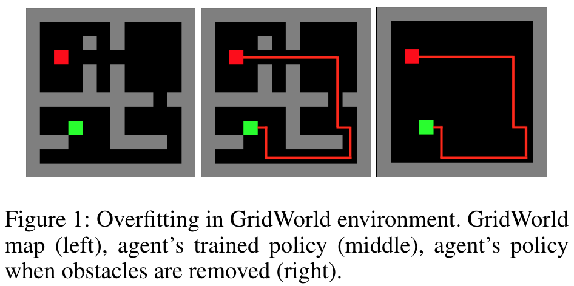
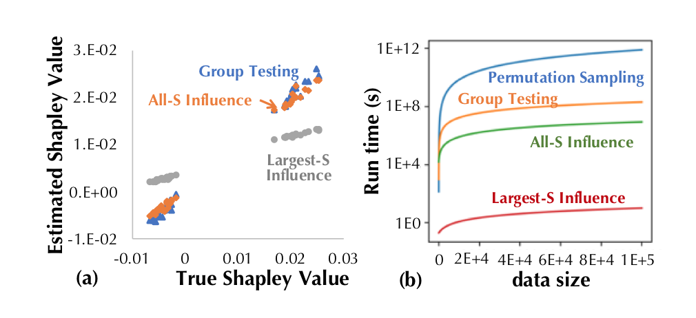
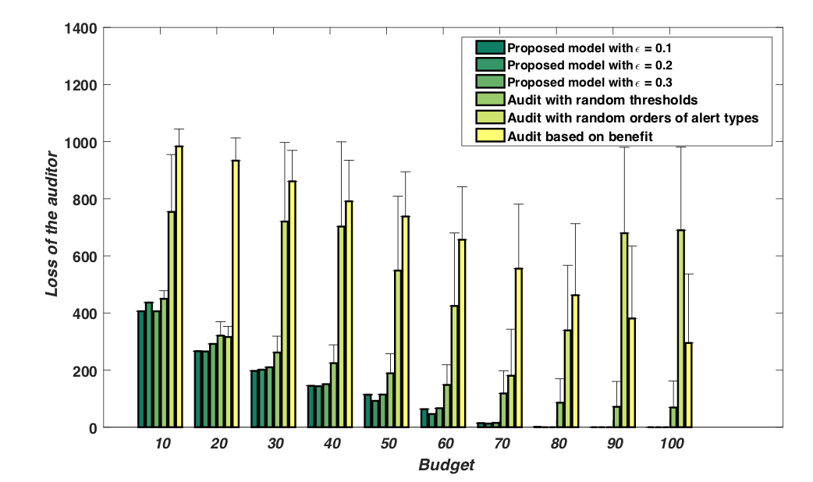
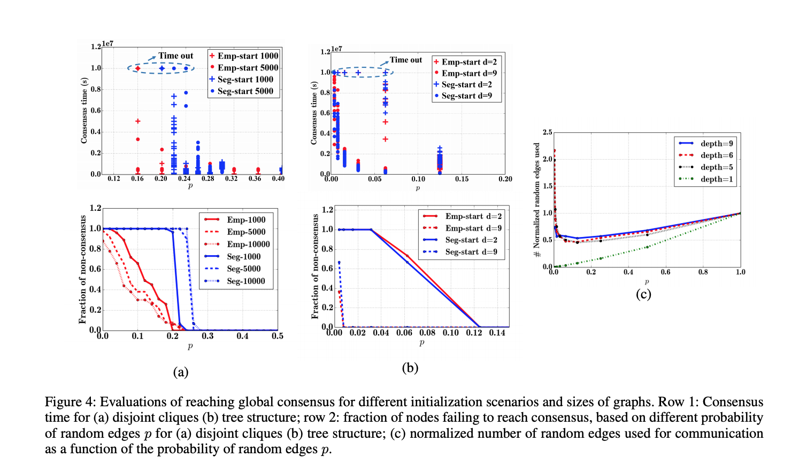
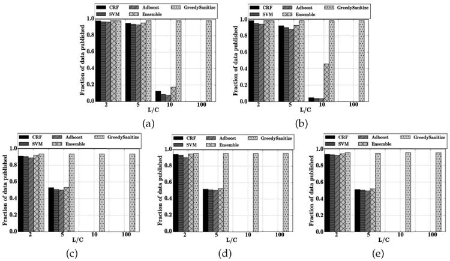

|  | How You Act Tells a Lot: Privacy-Leakage Attack on Deep Reinforcement Learning Xinlei Pan, Weiyao Wang, Xiaoshuai Zhang, Bo Li, Jinfeng Yi, Dawn Song. International Conference on Autonomous Agents and Multiagent Systems (AAMAS). May, 2019
|
|  | Towards Efficient Data Valuation Based on the Shapley Value Ruoxi Jia, David Dao, Boxin Wang, Frances Ann Hubis, Nick Hynes, Bo Li, Ce Zhang, Dawn Song, Costas Spanos. AISTATS 2019
|
|  | Get Your Workload in Order: Game Theoretic Prioritization of Database Auditing Chao Yan, Bo Li, Yevgeniy Vorobeychik, Aron Laszka, Daniel Fabbri, Bradley Malin. ICDE 2018
|
|  | Engineering Agreement: The Naming Game with Asymmetric and Heterogeneous Agents J. Gao, B. Li, G. Schoenebeck and F. Yu. In Proceedings of the 30th International Conference on Artificial Intelligence (AAAI 2017).
|
|  | Iterative classification for sanitizing large-scale datasets B. Li, Y. Vorobeychik, M. Li, and B. Malin. ICDM 2015
|